いくつかの標準構築手順（低水準汎用構築）¶
ファイル getfem/getfem_assembling.h で定義されている手続きは、古典的な偏微分方程式の問題のいくつかの剛性行列、質量行列、境界条件の構築を可能にします。任意の行列ライブラリで使用するために、すべての手順にはベクトルと行列のテンプレートパラメータがあります。
注意：構築手順では、同じ行列/ベクトルに対して複数の構築操作を実行する可能性があるため、構築の最初に行列/ベクトルを初期化しません。したがって、最初の構築操作の前にマトリックス/ベクトルを初期化する必要があります。
Laplacian（Poisson）問題¶
この問題を解決するための構築手順が定義されています。
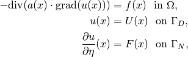
ここで、 は任意の次元の開領域、 および は の境界の一部、 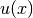 は未知数、 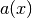 は所与の係数、 は所与のソース項、 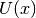 は 上の規定値 であり、  は 上の の規定された標準偏差です。 剛性行列を構築するために呼び出される関数は次の通りです。
は 上の の規定された標準偏差です。 剛性行列を構築するために呼び出される関数は次の通りです。
getfem::asm_stiffness_matrix_for_laplacian(SM, mim, mfu, mfd, A);
ここで
SM は適切な次元（つまり、 mfu.nb_dof() ）を持つ任意の型の行列です。
mim は使用される積分法を定義する型 getfem::mesh_im の変数です。
mfu は解の有限要素法を定義する型 getfem::mesh_fem の変数です。
mfd は係数 が定義されている有限要素法を記述する型 getfem::mesh_fem （おそらく mfu に等しい）の変数です。
A は mfd の各自由度に対する係数の値の（実数または複素数）ベクトルです。
両方の mesh_fem は同じメッシュ（つまり、 &mfu.linked_mesh() == &mfd.linked_mesh() ）を使用する必要があります。
基本行列を計算するのに使われる mim に格納されている積分法は十分な次元のものを選択することが重要です。次数は mfu の要素の多項式の次数、 mfd の非線形の場合の幾何変換を考慮して決定する必要があります。例えば、線形幾何学変換の場合、 mfu は 有限要素法、 mfd は 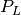 有限要素法です。 積分次数は次数 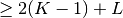 で選択する必要があります、それゆれ SM の構築の間に計算される要素積分は 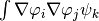 のようになります（それと  は mfu の基底関数で、 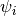 は mfd の基底関数です）。
は mfu の基底関数で、 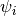 は mfd の基底関数です）。
ソース項を構築するのに呼び出す関数は次の通りです。
getfem::asm_source_term(B, mim, mfu, mfd, V);
B は正しい次元（まだ mfu.nb_dof() ）を持つ型のベクトルで、 mim は使用される積分法を定義する getfem::mesh_im 型の変数です、 mfd はそれぞれの自由度の 上の有限要素法が記述されている型 getfem::mesh_fem （おそらく mfu に等しい）の変数です、そして V は mfd 上の各自由度の の値のベクトルです。
関数 asm_source_term にはオプションの引数があります。これは getfem::mesh_region （または単に整数 i 、 mim.linked_mesh().region(i) が考慮されます）。したがって、Neumann条件 と同等の関数は次の通りです。
getfem::asm_source_term(B, mim, mfu, mfd, V, nbound);
mim 、 mfu 、 mfd のリンクメッシュでは、 nbound は境界 のインデックスです。
線形システムを変更する、または陽にDirichlet条件の核に還元することにより、 のDirichlet条件を考慮したり、線形システムを変更したり、Dirichlet条件のカーネルに陽に縮小するには、2つの方法があります（実際には、Lagrange乗数を使用するか、ペナルティを使用することも可能です）。最初の方法として、以下の関数が定義されています。
getfem::assembling_Dirichlet_condition(SM, B, mfu, nbound, R);
ここで、 nbound は境界のインデックスです Dirichlet条件が適用される場合、 R は mfu の各自由度の の値のベクトルです。この操作は、剛性行列 SM を変換するので、最後の操作でなければなりません。これはLagrange要素に対してのみ機能します。最後に、離散システムの式は次の通りです。
ここで、  は離散未知数です。
は離散未知数です。
2番目の方法では、もっと汎用的な関数を使用します。
getfem::asm_dirichlet_constraints(H, R, mim, mf_u, mf_mult,
mf_r, r, nbound).
解 を満たす汎用的な線形制約Dirichlet条件を参照してください。この関数は、 mf_mult で定義された乗数空間の全ての v に対して 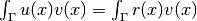 の型のDirichlet条件の構築を行います。mf_u があまりにも “複雑” な場合を除いて、有限要素法の mf_mult は mf_u と同じように選ばれることが多いです。
この関数はこれらの制約を新しい線形システム  に構築するだけです。 また、 “単純な” 制約行列を得るためにいくつかの追加の単純化を行います。
に構築するだけです。 また、 “単純な” 制約行列を得るためにいくつかの追加の単純化を行います。
次の関数は
ncols = getfem::Dirichlet_nullspace(H, N, R, Ud);
Dirichlet条件を満たすベクトル と、 のカーネルの直交基底 を返します。したがって、解く必要のある離散システムは、
であり、解は 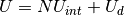 です。出力行列 は  （疎）行列でなければなりませんが、 ncols 列にリサイズする必要があります。出力ベクトル は、 ベクトルでなければなりません。このアプローチの大きな利点は汎用性であり、有限要素法の mf_u がLagrange型であることは規定されていません。 mf_u と mf_d が異なる場合、有限要素 mf_u 上のデータの投影（ ノルムに関して）が暗黙的にあります。
（疎）行列でなければなりませんが、 ncols 列にリサイズする必要があります。出力ベクトル は、 ベクトルでなければなりません。このアプローチの大きな利点は汎用性であり、有限要素法の mf_u がLagrange型であることは規定されていません。 mf_u と mf_d が異なる場合、有限要素 mf_u 上のデータの投影（ ノルムに関して）が暗黙的にあります。
より汎用的なスカラー楕円方程式 を扱いたい場合、次の式を使用する必要があります。ここで、 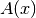 は正方行列です。
getfem::asm_stiffness_matrix_for_scalar_elliptic(M, mim, mfu,
mfdata, A);
行列データ A は、 mfdata 上で定義し 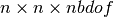 テンソル（Fortran順）を表すベクトルである必要があります。 は mfu のメッシュの次元であり、 は mfdata の自由度数です。
線形弾性問題¶
以下の関数は、線形弾性のための剛性行列を構築ます。
getfem::asm_stiffness_matrix_for_linear_elasticity(SM, mim, mfu,
mfd, LAMBDA, MU);
SM は適切な次元を持つ任意の型の行列です（ここでは mfu.nb_dof() ）、 mim は使用される積分法を定義する getfem::mesh_im 型の変数です。mfu は解の有限要素法を定義する必要がある getfem::mesh_fem 型の変数です。 mfd はLamé係数が定義されている有限要素法を記述する getfem::mesh_fem 型の変数です（おそらくは mfu に等しい）。 LAMBDA と MU はそれぞれ mfd の自由度に関するLamé係数の値のベクトルです。
ご用心
線形弾性問題はベクトル問題であるため、 mfu （ mf.set_qdim(Q) を参照）の対象次元はメッシュの次元と同じでなければなりません。
ソース項、NeumannおよびDirichlet条件を構築するために、前のセクションと同じ関数を使用します。
混合有限要素法によるStokes問題¶
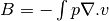 混合項の構築は次の通りです。
getfem::asm_stokes_B(MATRIX &B, const mesh_im &mim,
const mesh_fem &mf_u, const mesh_fem &mf_p);
質量行列の構築¶
2つの有限要素間の質量行列の構築は次の通りです。
getfem::asm_mass_matrix(M, mim, mf1, mf2);
同じ関数の境界上の質量行列を得ることも可能です。
getfem::asm_mass_matrix(M, mim, mf1, mf2, nbound);
nbound は mim.linked_mesh() の領域インデックス、または mesh_region オブジェクトです。

目次
前のトピックへ
次のトピックへ
Download
Main documentations
- GetFEM++ User documentation
- Python Interface
- Matlab Interface
- Scilab Interface
- Gmm++
- GetFEM++ project